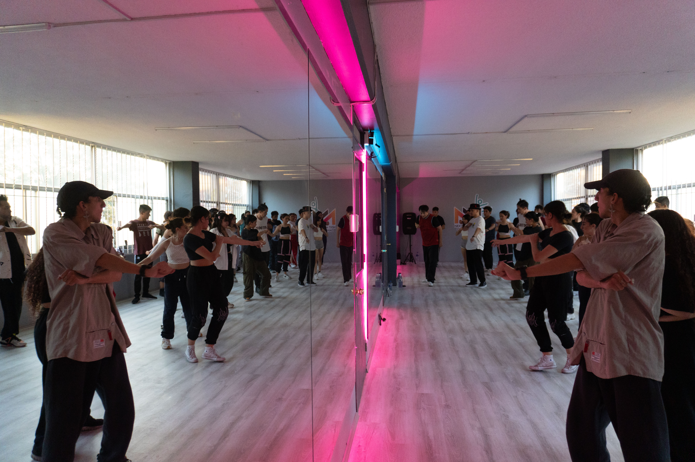
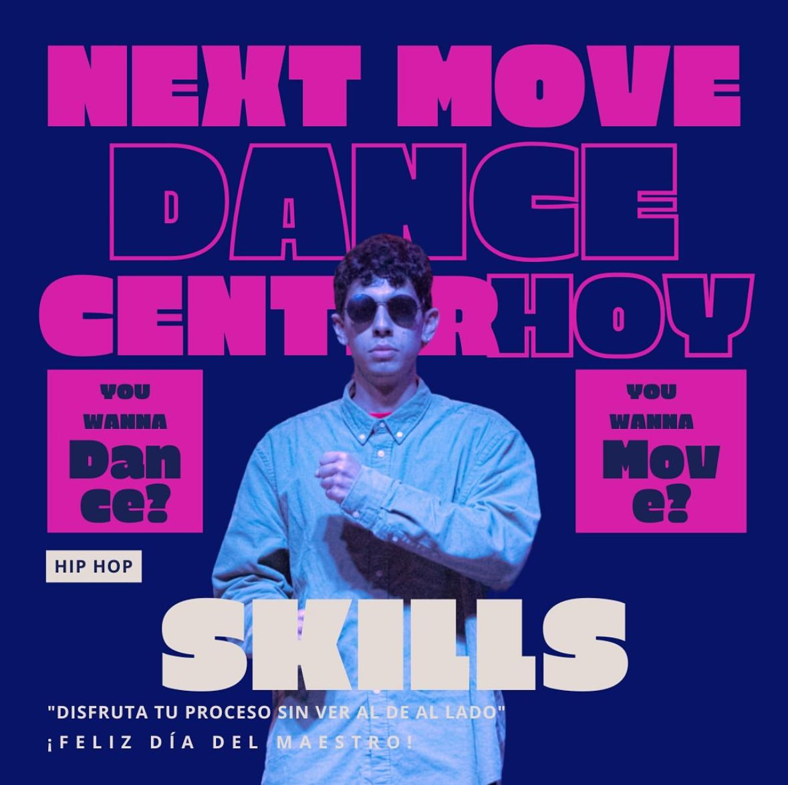
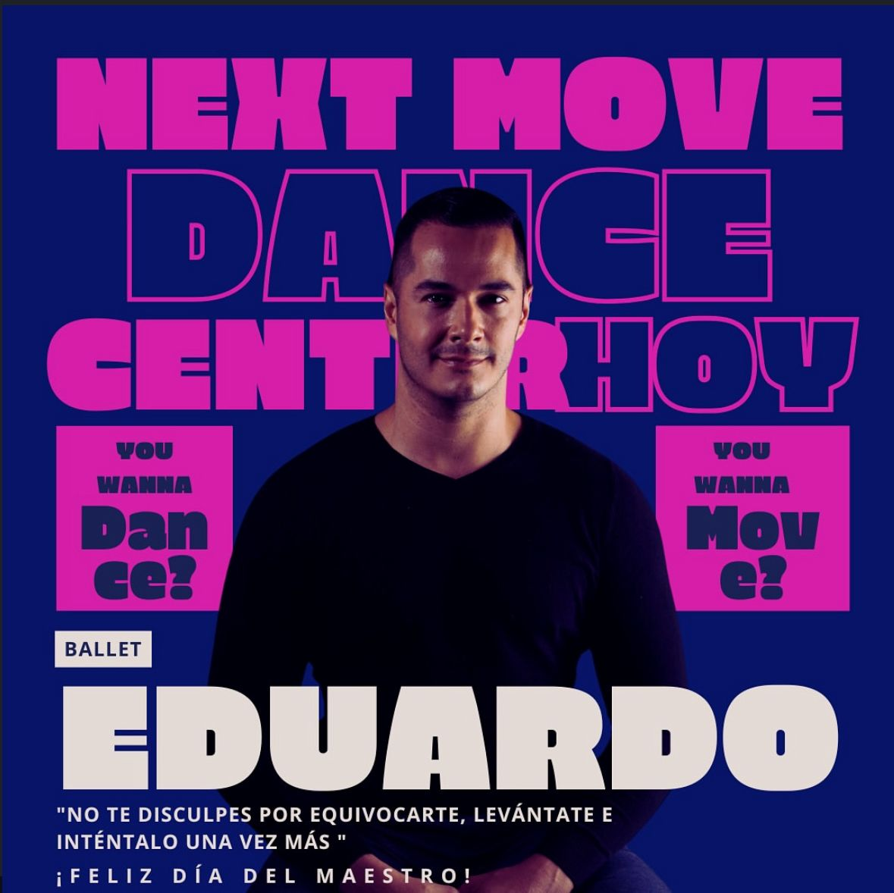
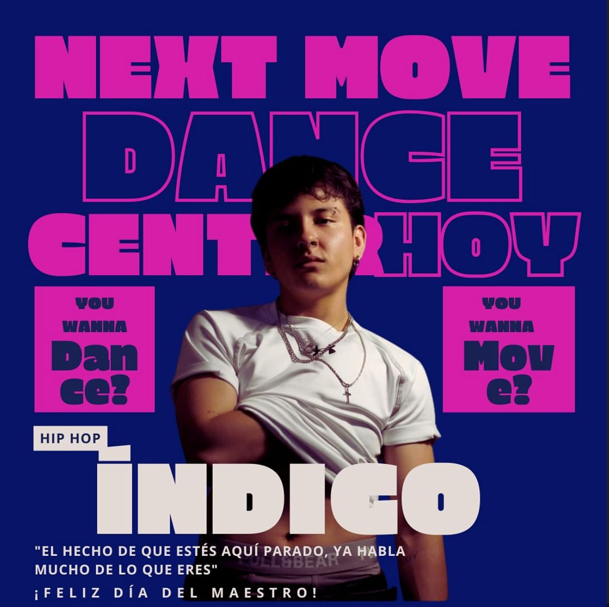

Kardan es una apasionada bailarina y docente que combina la elegancia del jazz con la energía vibrante del k-pop. Con varios años de experiencia en escenarios y estudios de danza, ha desarrollado un estilo único que mezcla técnica, musicalidad y actitud escénica. Su filosofía de enseñanza se basa en motivar a cada estudiante a expresarse con confianza, disciplina y alegría. En sus clases, Kardan no solo enseña pasos, sino que crea un espacio donde los alumnos descubren su fuerza interior y la magia de conectar con la música. Con su carisma y dedicación, inspira a sus estudiantes a superar retos, divertirse y encontrar su propia voz artística dentro del movimiento.
Zhevia es una artista del movimiento que transmite fuerza, estilo y autenticidad en cada clase. Con raíces en la cultura ballroom y una sólida formación en danza urbana, su enseñanza de vogue y heels se centra en la libertad de expresión, la confianza corporal y el empoderamiento personal. Sus clases son un espacio seguro y vibrante, donde invita a cada estudiante a explorar su identidad y brillar con actitud. Zhevia combina la técnica precisa con la teatralidad y la elegancia, inspirando a sus alumnos a moverse con seguridad y orgullo en cada paso. Más allá de la danza, su misión es que cada persona que entra a su salón se reconozca como alguien poderoso, auténtico y capaz de conquistar cualquier escenario.

Skills es un bailarín apasionado que vive y respira el hip hop. Su estilo fusiona la energía de los movimientos callejeros con una sólida técnica que ha cultivado a lo largo de su trayectoria en batallas, escenarios y entrenamientos. En sus clases, crea un ambiente dinámico y lleno de motivación, donde cada estudiante aprende no solo pasos, sino también la esencia y cultura que hacen único al hip hop. Para él, bailar es una forma de contar historias, liberar emociones y conectar con la música desde la autenticidad. Con su carisma y entrega, Skills inspira a cada alumno a encontrar su propio flow, trabajar en su confianza y disfrutar del proceso. Su misión es que quienes entren a su clase salgan con más que pasos: salgan con actitud, ritmo y una nueva manera de expresarse.

El profesor Eduardo es un bailarín y coreógrafo con una formación sólida en ballet clásico y una pasión por transmitir la disciplina y la belleza de esta técnica. Con años de experiencia en escenarios y compañías, ha llevado su amor por la danza a las aulas, donde comparte no solo pasos, sino también valores como la constancia, la precisión y la sensibilidad artística. En sus clases, combina la rigurosidad del ballet con una enseñanza cercana y paciente, enfocándose en que cada alumno descubra el control de su cuerpo y la fuerza detrás de la elegancia. Para Eduardo, el ballet no es solo una técnica, sino un camino para construir confianza, postura y expresión personal. Su objetivo es que cada estudiante, sin importar su nivel, logre sentir la magia de transformar la disciplina en arte, y que el ballet se convierta en una experiencia inspiradora y accesible para todos.

El profesor Índigo es un apasionado del hip hop que ha convertido la danza en su forma de vida y expresión. Su estilo combina la fuerza de los fundamentos con la libertad creativa de la improvisación, logrando que cada clase sea un espacio de energía, autenticidad y movimiento sin límites. Con una trayectoria en batallas, escenarios y proyectos artísticos, Índigo transmite a sus alumnos la esencia del hip hop: respeto, comunidad y autoexpresión. Sus clases son dinámicas, divertidas y desafiantes, pensadas para que cada bailarín encuentre su propia voz a través del ritmo y el flow. Más allá de enseñar pasos, Índigo busca que sus estudiantes vivan la cultura del hip hop como un espacio de identidad y empoderamiento, donde cada movimiento cuenta una historia única.
La profesora Kenny es pura energía y ritmo. Su propuesta combina la sensualidad y fuerza del reggaetón con una visión artística que transforma cada clase en una fiesta llena de actitud y confianza. Su carisma y dinamismo contagian a todos, logrando que incluso los más tímidos se animen a moverse con seguridad y estilo. Con experiencia en escenarios urbanos y colaboraciones en shows de música urbana, Kenny conoce de primera mano la esencia del género. En sus clases enseña no solo pasos y técnicas, sino también la importancia de la presencia escénica y la conexión con la música. Su meta es que cada estudiante se sienta libre, fuerte y auténtico, haciendo del reggaetón un espacio de empoderamiento, diversión y expresión personal.